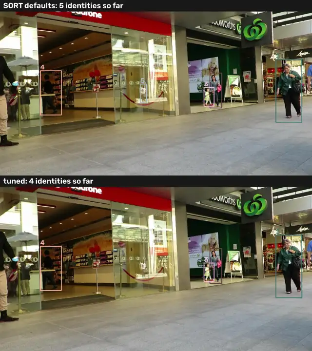

Tuning a multi-object tracker with metrics, without fooling yourself
A detector draws boxes; a robot needs identities that hold from frame to frame. The tracker that links the boxes has settings, often left at the values of the paper it came from. Tuned on proper tracking metrics, and tested on sequences the tuning never saw, how much better does it keep identities?
Same detections, two trackers

Held-out results
Leave-one-sequence-out over the 7 MOT17 training sequences: for each one, the settings with the best IDF1 on the other six are chosen, then scored on it. Counts pooled over the seven held-out sequences. IDF1: how consistently each person keeps one identity. MOTA: misses, false positives and identity switches combined.
What the figures say
- Identities hold much better with all three detectors on sequences the tuning never saw: IDF1 rises, mostly because lost tracks are kept alive longer and weak detections may extend them.
- MOTA barely moves, and with Faster R-CNN identity switches go up. IDF1 and switch counts do not always agree: the choice of metric is a decision, not a detail.
- The failures are on fast moving-camera sequences (MOT17-10, MOT17-13): a constant-velocity Kalman filter in image coordinates cannot follow when the camera itself turns, and a long track life then links the wrong people. The next step is camera-motion compensation, not more tuning.
- All folds picked the longest track life searched (30 frames): the grid edge, so a wider search could still gain.
What the tuning chose
How it works
- Kalman filter per object: centre, area and aspect ratio, with constant velocity, predicts where each track should be in the next frame.
- Hungarian matching on IoU between predictions and detections; unmatched detections start new tracks.
- Track life: reported after min hits matches, deleted after max age frames unseen.
- Second pass (optional): weak detections may extend an existing track, never start one.
- Evaluation: py-motmetrics, MOT17 protocol (IoU 0.5, distractors removed).
Limits
- Fixed public detections: the gains are the tracker's alone.
- Pedestrians, 2D, one camera: no multi-camera fusion, no 3D positions or speeds.
- Grid search over a few settings; Kalman noise kept at SORT's values.
- Training sequences only (test ground truth is not public): leave-one-sequence-out stands in for a test set.